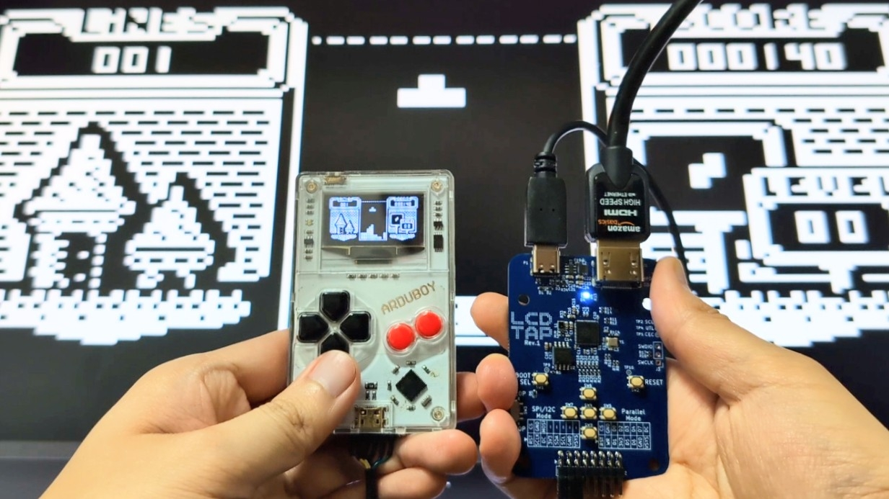
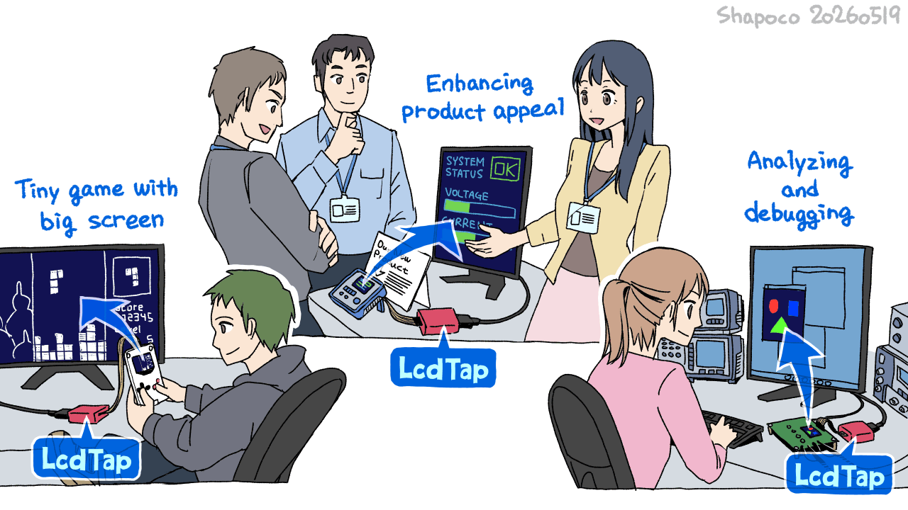
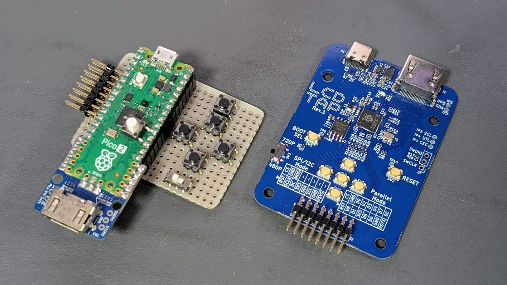
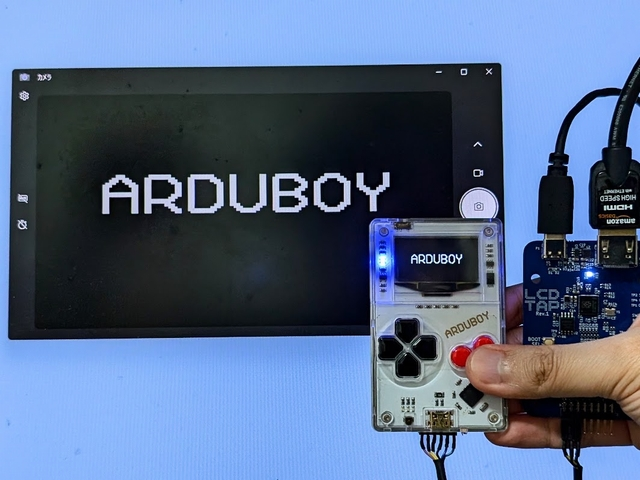
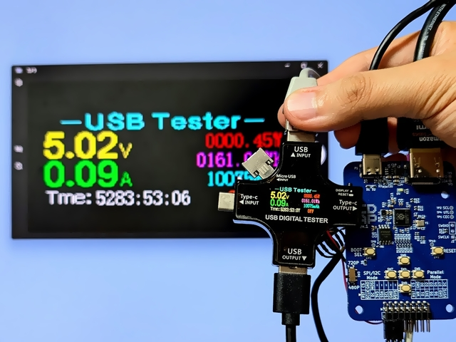
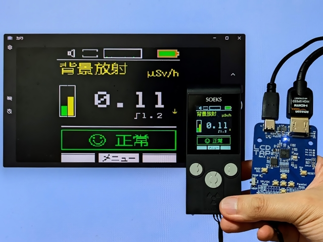
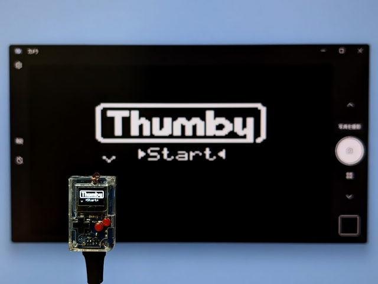
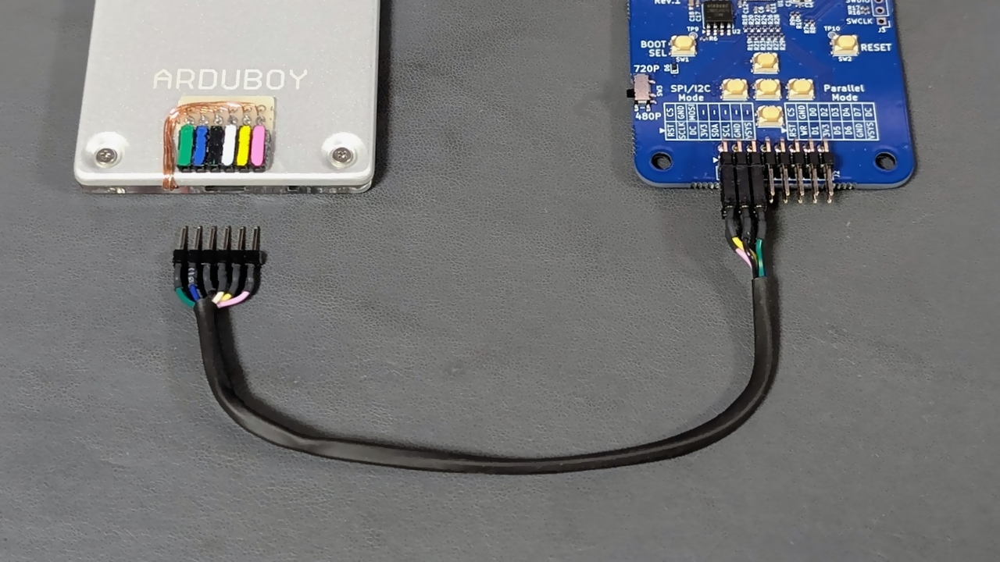
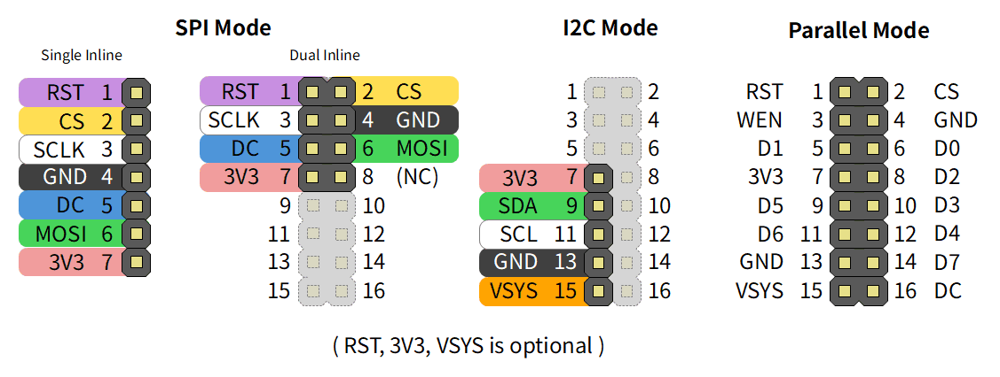

What is LcdTap?
LcdTap is a library and its implementation that receives LCD controller commands (via SPI or I2C) and outputs the framebuffer as a DVI-D signal. You can also change settings and capture still images via UART.

You can use it in many ways: play tiny screen games like Arduboy on a large screen, enhance your product appeal at exhibitions and presentations, debug devices, and much more.

Features
- Receives LCD controller commands and reconstructs images into the framebuffer
- Outputs framebuffer contents as DVI-D signal (using PicoDVI)
- Programmable screen sizes (up to 480x320 supported on Pico2)
- Command Dump: Captures and displays LCD control commands
- Supported Controllers: ST7789, ILI9341, ILI9488, SSD1306, SSD1309, SSD1331, and some variants
- Supported Interfaces: SPI (4-line, 3-line), I2C, 8-bit Parallel
- Supported Pixel Formats: Monochrome, RGB111, RGB332, RGB444, RGB565, RGB666
LcdTap-Pico2 Universal
LcdTap-Pico2 Universal is an LcdTap implementation for Raspberry Pi Pico 2.

By changing settings via five buttons or UART interface, it can adapt to various LCD controllers and interfaces. You can view the contents of LCD control commands using Command Dump, and also obtain pixel-perfect still image captures via UART interface.
Schematics

Download Pre-built Firmware
-
Download the zip from the releases
and extract
lcdtap_pico2_universal.uf2. -
Connect Raspberry Pi Pico 2 to your computer while holding the BOOTSEL button, and copy the
extracted
.uf2file to the mounted storage.
USB Serial Interface
Serial Interface is available from LcdTap Monitor.
Technical Details
Cases
If you try LcdTap, I would be happy if you could tweet your connection and setup details with the #LcdTap tag ;)
-

Arduboy -

USB Tester J7-c -

USB Tester KWS-X1 -

M5Stack CoreS3 -

Picosystem -

Geiger-Muller Counter Soeks-01M -

Thumby -

TinyJoypad
Other Implementations
LcdTap-Pico2 for ST7789
Simplified version 240x320 or 240x320 SPI LCDs. See example/pico2_st7789.
LcdTap-Pico2 for SSD1306
Simplified version for 128x64 monochrome OLEDs with SSD1306 controller. See example/pico2_ssd1306.
Recommended Header Pinout / Cable Color


| Pin | Parallel Mode | SPI Mode | I2C Mode | Recommended Color |
|---|---|---|---|---|
| 1 | RST | RST | Violet or Brown | |
| 2 | CS | CS | Yellow | |
| 3 | WEN | SCLK | White | |
| 4 | GND | GND | Black | |
| 5 | D1 | DC | Blue | |
| 6 | D0 | MOSI | Green | |
| 7 | 3V3 | 3V3 | 3V3 | Red |
| 8 | D2 | |||
| 9 | D5 | SDA | Green | |
| 10 | D3 | |||
| 11 | D6 | SCL | White | |
| 12 | D4 | |||
| 13 | GND | GND | Black | |
| 14 | D7 | |||
| 15 | VSYS | VSYS | Orange | |
| 16 | DC |